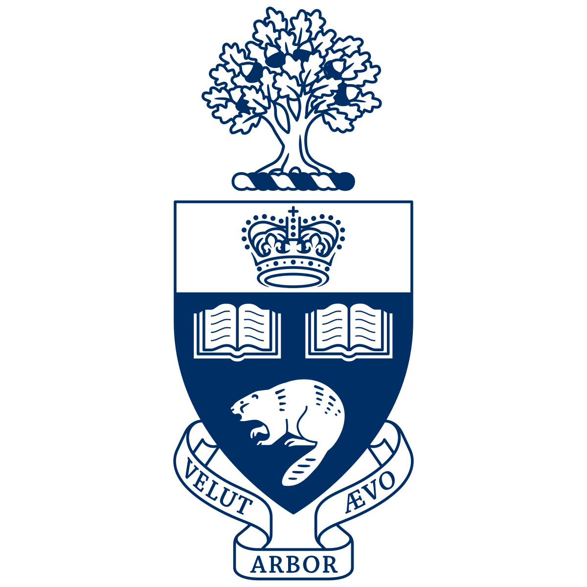
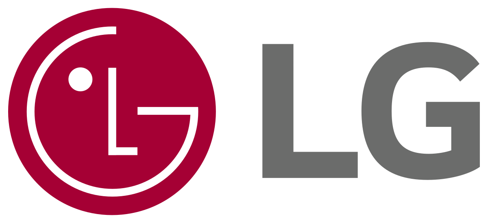
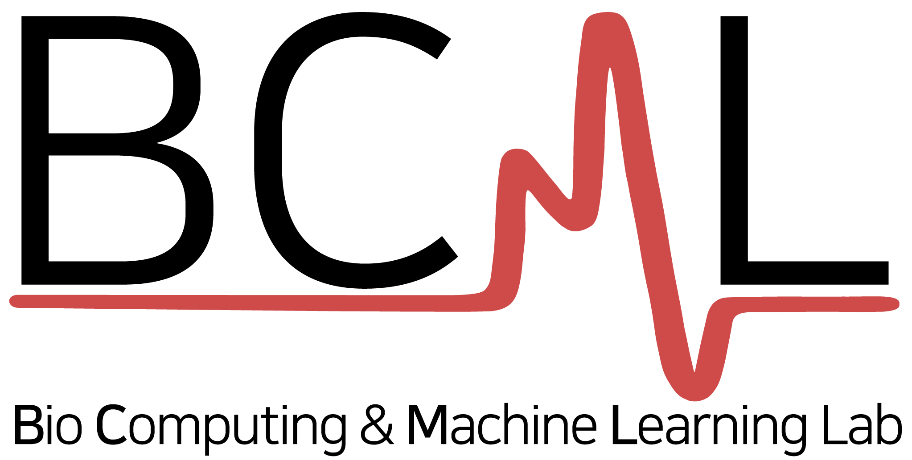
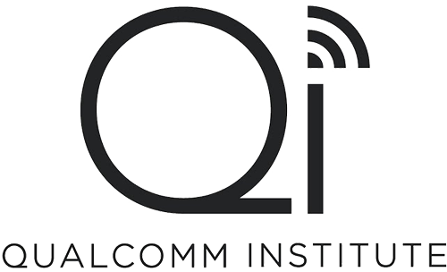
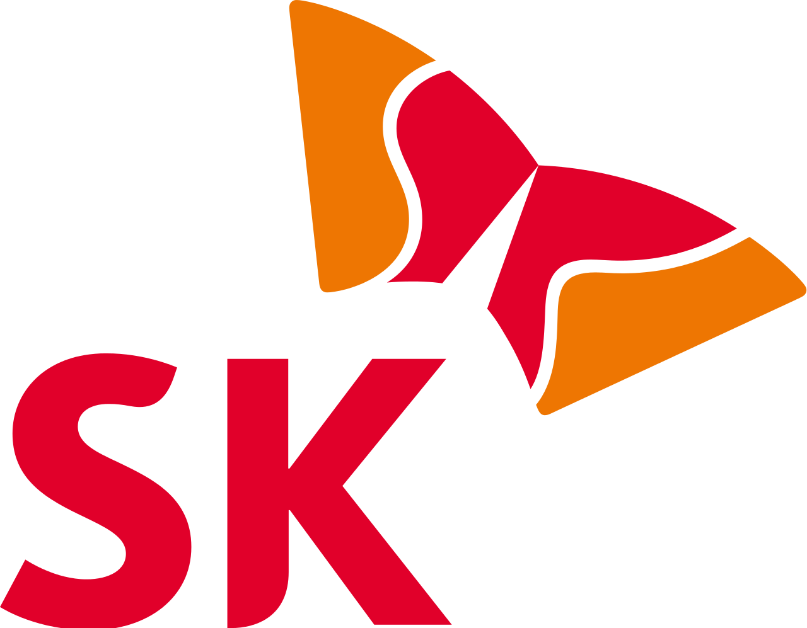
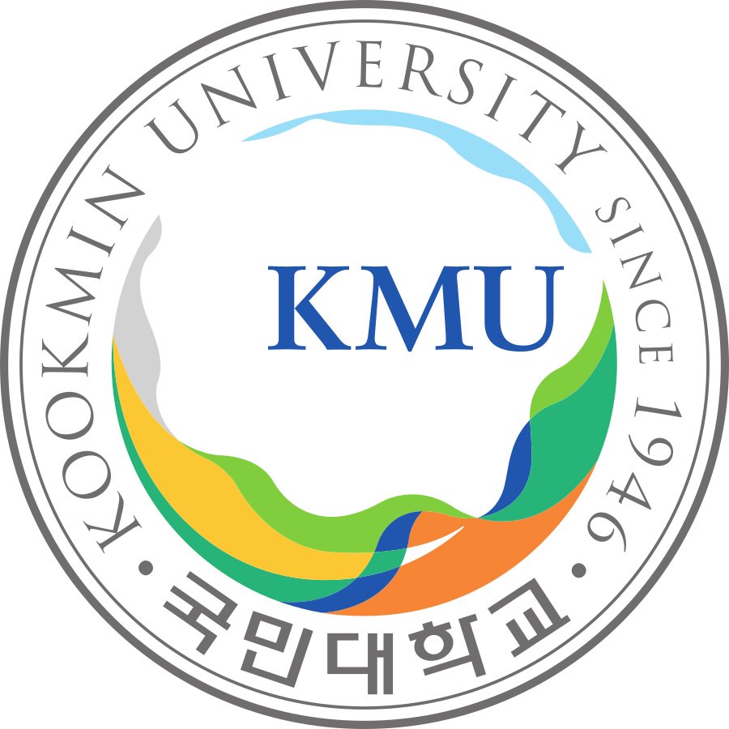
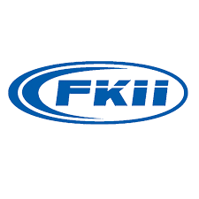

Hello! 👋 I'm Dongwook Kwon
AI Researcher & Graduate Student at University of Toronto
Specializing in Machine Learning, Anomaly Detection, and Medical AI
Quick Overview
Key highlights and achievements at a glance
Current Status
- Graduate Research Exchange at University of Toronto (2025)
- AI Research Project at LG Electronics Canada
- Master's Student at Kwangwoon University (GPA: 4.33/4.5)
Research Impact
Core Expertise
Key Achievements
- Minister's Award - Smart Maritime Logistics (2021)
- Best Poster Silver - Biomedical Engineering Conference (2024)
- Achievement Award - Qualcomm Institute, UCSD (2022)
- Multiple Patents - Network & Medical Device Anomaly Detection
International Experience
Research Focus
About Me
AI Researcher passionate about Machine Learning and Medical AI
Education
Jan 2025 – Present

Graduate Research Exchange Program
University of Toronto
Toronto, Ontario, Canada
Program: Prestigious international research exchange program
Research Areas: Advanced AI, Machine Learning, Medical Device Security
Collaboration: Working with leading AI researchers and LG Electronics Canada
Focus: Cross-cultural research experience and international academic collaboration
Mar 2024 – Present

Master of Science in Computer Engineering
Kwangwoon University
Seoul, South Korea
GPA: 4.33/4.5 (98.1%)
Research Focus: Machine Learning, Anomaly Detection, Medical AI
Thesis: Deep Learning-based Anomaly Detection in Medical Devices
Advisor: Prof. Cheolsoo Park at Bio-Computing and Machine Learning Laboratory
Key Achievements: Published 5+ papers, 2 patents filed, Graduate Research Exchange Program recipient
Mar 2019 – Feb 2024
Bachelor of Science in Electronics and Communications Engineering
Kwangwoon University
Seoul, South Korea
GPA: 3.41/4.5 (88.1%)
Major Coursework: Digital Signal Processing, Computer Networks, Embedded Systems, Machine Learning
Capstone Project: IoT-based Smart Home Security System
Achievements: Excellence Award (2022), Software Award (2021), Multiple academic scholarships
Research Experience: Bio-Computing and Machine Learning Laboratory (2021-2024)
Research Areas
Publications
8+Awards
9+Projects
8+Patents
3Work Experience
My professional journey and research experiences
Jan 2025 – Present
Research Secondment
University of Toronto
Toronto, Ontario, Canada · On-site
Conducting advanced research in AI and machine learning as part of the Graduate Research Exchange Program, collaborating with leading researchers in the field.
Jan 2025 – Present

Research Project
LG Electronics Canada
Toronto, Ontario, Canada
Conducting advanced research in AI and machine learning applications for consumer electronics and smart devices.
Aug 2021 – Present

Research Assistant
Bio-Computing and Machine Learning Laboratory
Kwangwoon University, Seoul, South Korea
Leading research initiatives in bio-computing applications, developing machine learning models for medical device anomaly detection, and contributing to multiple high-impact publications.
Jul 2022 – Aug 2022

AI Development Project
Qualcomm Institute
University of California, San Diego
Summer internship focusing on AI development projects, working on cutting-edge research in wireless communication and signal processing applications.
Feb 2021 – Dec 2021

Development Project
SK Telecom
Seoul, South Korea
Participated in telecommunications development projects, contributing to innovative solutions in mobile network optimization and data analytics.
Projects
Research and industry experience in AI and machine learning
Evaluation Frameworks for Agentic AI Systems
LG Electronics Canada
Toronto, Ontario, Canada • Jan 2025–Present
Developed an evaluation framework for agentic AI systems using LLMs to assess performance
AI-based Intrusion Detection and Attack Packet Crafting Technologies for APR1400

Sejong University
Seoul, Korea • Jul 2022–Present
Developed an AI defense system to protect nuclear power plants from cyber attacks, which led to a publication and an outstanding paper award for its application to medical devices
Development of Active Kill-Switch and Biomarker Based Defense System for Life-Threatening IoT Medical Devices

Kookmin University
Seoul, Korea • Sep 2021–Dec 2022
Developed a security system for heart implant devices using an anomaly detection algorithm, which resulted in a publication and a patent
Quadruped Robot Using Vision SLAM with a Depth Camera
Ministry of Science and ICT
Korean Government • Apr 2022–Nov 2022
Developed an autonomous quadruped robot using a navigation algorithm with SLAM and a depth camera, which resulted in receiving the University President's Award and the Federation President's Award
Personality-Based Drug Addiction Prediction System
Qualcomm Institute
University of California, San Diego • Jul 2022–Aug 2022
Developed a personality-based drug addiction prediction system using a machine learning model, which resulted in receiving an Achievement Award
Development of a Smart Logistics System Using Computer Vision
Ministry of Oceans and Fisheries
Korean Government • Apr 2021–Nov 2021
Developed a logistics detection system that incorporates location tracking and stack layer identification for containers, which resulted in receiving the Korean Minister's Award
Smart Kitchen IoT System Utilizing Computer Vision and Deep Learning
Kwangwoon University
Seoul, Korea • May 2021–Oct 2021
Developed a cloud IoT platform featuring a system for classifying groceries in the fridge and an OCR receipt program, which resulted in receiving the University President's Award
Kinematic Motion Classification System using Accelerometer and Gyroscope Sensor Data
Kwangwoon University
Seoul, Korea • Sep 2021–Oct 2021
Developed a kinematic motion classification system using accelerometer and gyroscope sensor data, which resulted in receiving the Director's Award
Research & Publications
Recent publications and patents in AI and machine learning
🏅 Awards & Honors
Minister of Oceans and Fisheries Award (Gold Medal)
Smart Maritime Logistics Project Competition
December 17, 2021
Achievement Award
Qualcomm Institute AI Development Project, UC San Diego
August 15, 2022
Best Poster Award Silver Winner
The 10th International Biomedical Engineering Conference
November 8, 2024
Outstanding Paper Award
Korean Society of Medical and Biological Engineering Fall Conference
November 11, 2023
Kwangwoon University President's Award (Excellence)
18th Kwangwoon ICT Exhibition (KWIX)
September 29, 2022
Kwangwoon University President's Award (Grand Prize)
2021 MY (Multi-Y) Capstone Design Competition
October 8, 2021

Korea Information Industry Federation Chairman's Award (Bronze)
2022 Hanium ICT Mentoring Contest
December 2, 2022
Kwangwoon University SW Center Director's Award (Encouragement)
2021 AI Hackathon
October 8, 2021
Scholarship Recipient
Kwangwoon University Alumni Association
December 15, 2022
📜 Recent Publications
Designing a remote photoplethysmography-based heart rate estimation algorithm during a treadmill exercise
Electronics, vol. 14, no. 5, p. 890, 2025
Hybrid neural network model for anomaly detection in implantable devices using graph attention networks and transformers
Proc. of the 10th International Biomedical Engineering Conference, 2024
A Dual-Directional Approach to Anomaly Detection in Cyber-Physical Systems
Proc. The Institute of Electronics and Information Engineers Summer Annual Conference of IEIE, 2024
Metaverse: Design of the Car Price Prediction Model Through a Machine-learning Approach
Proc. 2023 IEEE International Conference on Metaverse Computing, Networking and Applications (MetaCom), pp. 734-737
Real-Time Anomaly Detection in Industrial Cyber-Physical Systems Using Deep Learning based Bidirectional GRU
Proc. 33rd Artificial Intelligence and Signal Processing Conference, 2023, pp. 239-241
Enhancing Medical Device Security with GNN-GRU Anomaly Detection Model
Proc. 62nd KOSOMBE Autumn Conference, 2023, pp. 204-205
Blood Pressure Estimation Based on Graph Convolution Network with Peak to Peak Interval
Proc. 62nd KOSOMBE Autumn Conference, 2023, pp. 426-428
Analysis of Reconstruction-Based Multivariate ECG Time-Series Data for Arrhythmia Diagnosis
Proc. 60th KOSOMBE Autumn Conference, 2022, pp. 425-426
💡 Patents
Network Anomaly Detection Based on Categorical Data
KR 10-2024-0110559
Anomaly Detection for Implantable Medical Devices
KR 10-2022-0164087
GPT API-Based Network Anomaly Detection
KR 10-2023-0139066
Leadership Experience
Student leadership roles at Kwangwoon University
Kwangwoon University
2019 – 2024 • Seoul, South Korea
Contact
Let's connect and collaborate!
dongwook.kwon@mail.utoronto.ca
Location
Seoul, KR
Current Position
Graduate Research Exchange, University of Toronto